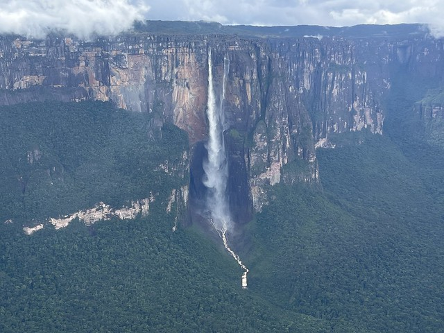

Venezuela Map
Google Maps
Home Page
Resume
Topic
Map
Venezuela: Must-See Places
Click Next/Prev to explore. The map updates with each place.

Salto Ángel (Angel Falls)
Pico Bolívar
Médanos de Coro
Los Roques (beaches)
Prev
Next